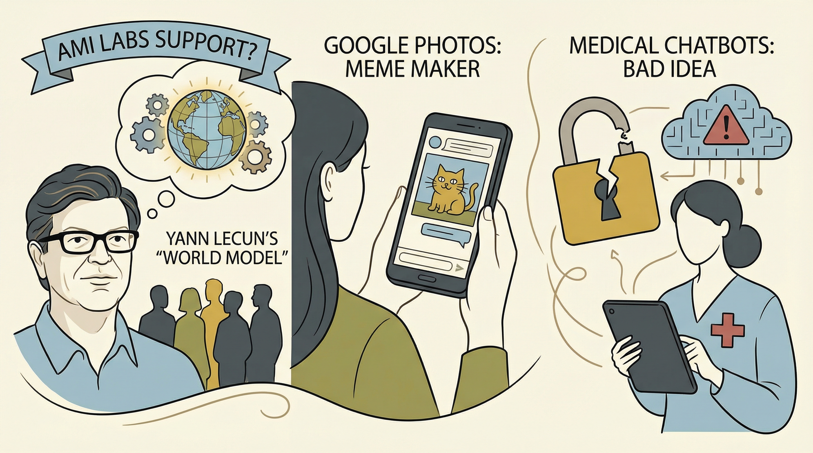

Yann LeCun创立的AMI Labs引起关注，其‘世界模型’概念备受瞩目。
两克伴AIGC日报
2026-01-24 星期六

本期关注：ezulabs推出Skill Generator工具将终端工作流程转化为AI代理技能，Cursor的FastRender项目以数千并行代理构建浏览器，二者分别降低AI技能开发门槛、展示AI在浏览器技术的新潜力，推动AI应用创新与技术普及。
📰 行业动态
Google Photos新增功能，利用Gemini AI技术让用户制作自己的表情包。
OpenAI表示，每周有超过2.3亿人向ChatGPT寻求健康建议。
Meta暂停青少年与AI角色的聊天功能，以开发新版本。
🔥 今日焦点
ezulabs近日推出了一款名为“Skill Generator”的CLI工具，旨在将终端工作流程转化为AI代理技能。该工具通过用户界面（TUI）允许用户从控制台历史记录中选择命令，并自动识别参数，从而为Claude和Cursor等AI代理生成相应的技能。
这一创新工具的核心价值在于简化了AI技能的开发过程。在传统的AI技能开发中，开发者需要手动编写代码来定义和实现技能，这不仅耗时费力，而且对技术要求较高。而Skill Generator通过自动化这一过程，使得即使是非技术背景的用户也能轻松地将自己的工作流程转化为AI技能。
近日，Cursor公司发布了一篇名为《Scaling long-running autonomous coding》的文章，详细介绍了他们在协调大量自主编码代理方面的研究进展。文章中提到了FastRender项目，这是一个由数千个并行代理构建的浏览器。FastRender项目由工程师Wilson Lin主导，旨在通过其独特的代理群构建全新的网络浏览器。
FastRender的核心在于其独特的代理架构，这些代理可以协同工作，实现高效的网页加载和渲染。目前，FastRender尚处于早期阶段，JavaScript引擎尚未完全实现，但已展现出强大的潜力。通过YouTube上的47分钟视频，观众可以了解到FastRender的演示过程，以及其背后的技术细节。
Sweep，一款开源的1.5亿参数模型，旨在预测用户的下一次代码编辑。该模型通过分析用户最近的编辑作为上下文，而非仅限于光标周围的代码，从而预测用户接下来的操作。这一创新性预测方式使得Sweep在变量重命名或重复性更改等场景中表现出色。值得一提的是，Sweep模型体积小巧，可在本地运行，且在速度和准确性方面均优于规模是其四倍的模型。
Sweep模型的发布对AI领域具有重要意义。首先，它展示了在代码编辑预测领域的巨大潜力，为开发者提供更智能、高效的代码编辑体验。其次，Sweep的研究成果揭示了提示格式对模型性能的影响，为后续研究提供了有益的参考。此外，Sweep的成功也表明，在AI领域，模型体积并非决定性因素，关键在于如何有效地利用现有资源，实现性能与效率的平衡。
📚 深度长文
《The Download：健康领域的聊天机器人，以及美国关于AI监管的争论》一文深入探讨了健康领域聊天机器人的发展及其在医疗诊断中的应用。文章指出，尽管“Dr. Google”曾存在诸多问题，但ChatGPT Health等新一代聊天机器人有望改善这一状况。过去二十年来，人们面对新出现的医疗症状时，往往会选择上网搜索相关信息。然而，这种做法往往存在误导性。文章通过分析聊天机器人在健康领域的应用，揭示了其潜在的优势和挑战，并探讨了美国在AI监管方面的争论。文章的深度和独特见解为AI从业者和相关领域的研究者提供了宝贵的参考。
---
《Introducing GIST: The next stage in smart sampling》一文深入探讨了智能采样领域的最新进展，提出了GIST（Graph-based Iterative Sampling Technique）算法。该算法通过构建图模型，实现了对大规模数据集的智能采样，有效提升了采样效率和准确性。
文章的核心观点在于，传统的采样方法在处理大规模数据集时往往效率低下，而GIST算法通过迭代采样策略，结合图模型的优势，实现了对数据集的精细化管理。关键论据包括：GIST算法在多个数据集上的实验结果表明，其采样效果优于现有方法，且在保证采样质量的同时，显著提高了采样速度。
ByteByteGo官方发布招聘信息，由Alex Xu撰写。文章核心观点是ByteByteGo正在招聘两位重要职位：技术深度剖析作家（系统设计或AI系统）和首席讲师（构建全球最有用的AI团队）。关键论据包括对技术深度剖析作家的要求，需具备系统设计或AI系统领域的专业知识和写作能力；对首席讲师的要求，需具备丰富的教学经验和AI领域的深入理解。阅读价值在于为AI从业者提供了解ByteByteGo招聘需求的窗口，同时文章深度和独特见解有助于读者拓展视野，提升自身能力。文章语言流畅专业，适合AI从业者阅读。
🛠️ 产品推荐
Show HN: Booklife-MCP是一款基于Go语言构建的MCP服务器，通过Claude实现Libby（图书馆电子书/有声书）、Hardcover（阅读追踪器）和Open Library（元数据）的整合，打造一个统一的对话式界面。该产品旨在解决用户使用多个平台管理阅读生活的痛点，如切换应用查看图书状态、更新阅读进度或选择下一本读物等。Booklife-MCP通过AI技术，为用户提供便捷、高效的阅读管理体验。
---
Show HN：I built a CLI to search screenshots by what's in them，这是一款基于OCR和本地视觉模型的CLI工具，旨在解决用户在大量截图库中难以快速找到所需图片的问题。该工具通过提取图片中的文字和描述图片内容，实现语义搜索，用户只需输入关键词即可快速定位截图。其核心功能是利用AI技术实现图片内容的搜索，无需API密钥，运行本地化，搜索速度快， indexing过程耗时约2秒，而搜索几乎瞬间完成。该工具为用户提供了便捷的图片搜索体验，特别适合技术从业者使用。
---
NeuralVoid是一款免费的Windows工具，旨在阻止AI应用程序将您的数据发送到服务器。它通过一键操作，向您的hosts文件添加阻止规则，保护Grammarly、Adobe（Photoshop/Firefly）、Microsoft Copilot/Edge等AI应用的数据传输。该工具无需额外软件运行，且可完全撤销设置。NeuralVoid的开放源代码和MIT许可证，体现了其透明性和安全性。这款产品旨在保护用户隐私，防止AI“助手”监控用户所有输入，为技术从业者提供便捷的隐私保护解决方案。